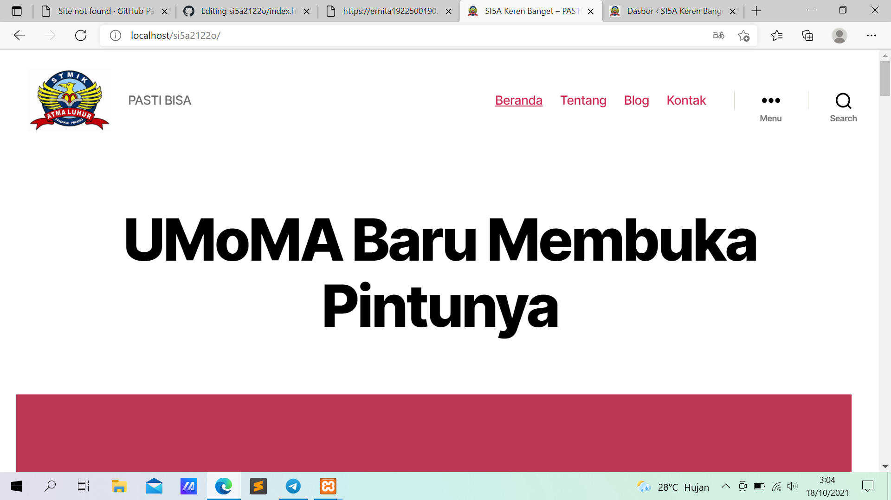
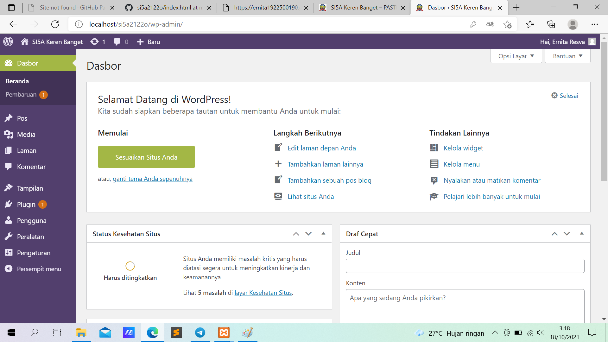

NIM: 1922500190
Nama:Ernita Resva Julina
Kelompok:SI5A
kesimpulan atau hasil pertemuan 2 yang saya ambil adalah:
- di dalam htdocs, mesti ada folder si5a2122o, sehingga pada browser bisa diakses dengan http://localhost/si5a2122o
- jika object not found (404), maka cek dulu nama folder antara htdocs dengan yang diketik di localhost
- jika ada tulisan error establishing database connection, cek dulu apakah mysql sudah running pada xampp control panel
- jika sudah running, buka wp-config.php pada folder si5a2122o, dan cek db_name. db name ini pastikan ada di phpmyadmin
- jika pada phpmyadmin belum ada nama databasenya, maka import dulu file sql bahan pertemuan ke 2 (hasil pertemuan ke 1)
- wordpress memiliki 2 sisi, 1 tampilan backend (untuk admin/dashboard) dan 1 nya lagi tampilan front end (untuk pengunjung/client area)
- untuk backend, harus login dulu di alamat http://localhost/si5a2122o/wp-admin
- data user baru(role,ubah,hapus) dengan cara klik pengguna pilih tambah baru dan di isi sesuai dengan nama pengguna yang di inginkan.nama pengguna(user name) usahakan tidak mengandundung spasi
A.peranan di sini diibagi masing-masing atau dengan kata lain dibatasi dan peranan yang paling rendah adalah pelanggan. cara membuka blog khusus pengguna dengan buka browser lain masukkan alamat http://localhost/si5a2122o/wp-admin dan masukkan username dan password yang telah dibuat dipelanggan tadi.Pelanggan Bisa mensortir siapa saja yang boleh komentar di blog.
B.peranan kontributor bisa melihat komentar , dan yang menjadi pembeda dari pelanggan . konstributor bisa melihat semua pos dan bisa menambah tulisan atau untuk promosi di blog
Berikut tampilan halaman web setelah di restore:

Berikut tampilan front end:
Berikut tampilan back end :
